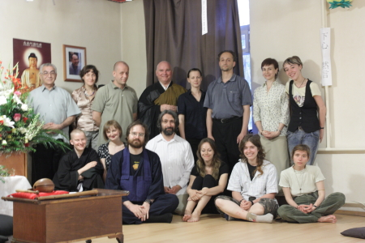

(See also our English site)
История

22 мая 2010 года в культурном центре «Белые облака» лекция мастера дзэн Торна, приехавшего в Россию впервые и по приглашению нашего Центра, собрала более 30 человек.
23 и 24 мая в московском буддистском храме «Дальма-са» мастер Джордан Торн произнёс две дхармовые речи, провёл медитацию дзадзэн и первую в России церемонию Дзюкай, обряд посвящения Бодхисатвы. Фотография с мастером дзэн Джорданом Торном, сделанная по успешному завершению двухдневной учебной программы в превосходном храме «Дальма-са», опубликована справа.
25 мая 2010 года в Московском центре Дзэн (пока это небольшая «однушка» в ВАО Москвы) мастер Торн провёл дзадзэн и прочитал свою последнюю, третью речь Дхармы «Раскрытие жизни и практики».